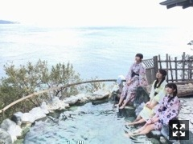

| 2017/02 02 Thu | めまい。760回目 |
日芽香が17thシングル休業するということで、
かなり寂しいですが、
休むときはしっかり休む、大事。
といいつつ、会えなくなるのも寂しいので
ちょこちょこ連絡入れてます！
活動していく上でいろんなことがある。
それを近く理解できるのはメンバーです。
綺麗事とかでもなんでもなく、
寄り添えるんだったら寄り添いたいなと思う。

17thシングル、選抜されました。
16thは自分の中で変化が大きい期間でして、
もう変わり過ぎて気持ちが二転三転して
少し落ち着いて切り替え始めたところでした。
与えられた場所でしっかりと
まだまだ自身が世間に浸透していない分、
興味があるジャンルに恐れず
踏み込む姿勢はこれからも崩さないで、
それでいてしっかり結果出すことを
これからの課題にします！
言ったことは必ず実現させる。
自分にしかできない強力な何かを見つけてって
いろんな意味で高みを目指して
いろんな場所で楽しそうにしてる姿を見せて
ちょっとでも誰かに
影響を与えられたらいいな〜〜
17thシングルも応援よろしくお願い致します！

TVつけたらふとアストルピアソラの
Libertangoが流れてたので
バレエの発表会を思い出した。
最後の発表会でみんなで踊った大トリの曲。
大人な感じ。今踊りたいやつ、、
その流れで過去に踊った曲が
どれだったか探したら
マキシムのアルバムにほとんど入ってた。
まだ振付覚えてる不思議〜
大勢で魅せる海、木、雪、太陽、鳥
毎年それぞれテーマをつけた創作ダンスで、
疾走感のある曲に振付にすべて
自分にハマりすぎて思い出深い。
この辺の曲聴きながら帰り道歩いてるんだけど
風が顔に当たって肌がピリピリするね、
目が醒める〜〜

4日のニッポン放送 オールナイトニッポン
50周年ALL LIVE NIPPON VOL.5出演します！
まいちゅん！！！！！
まりか
コメント(742)
2017/02/02 23:59